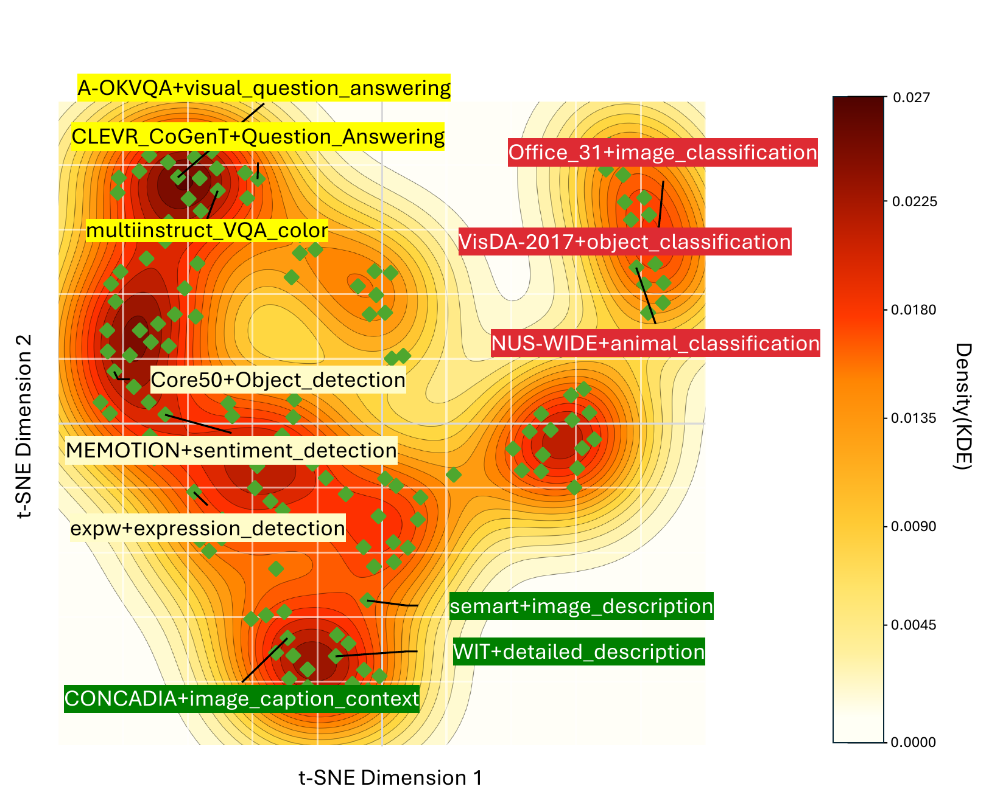
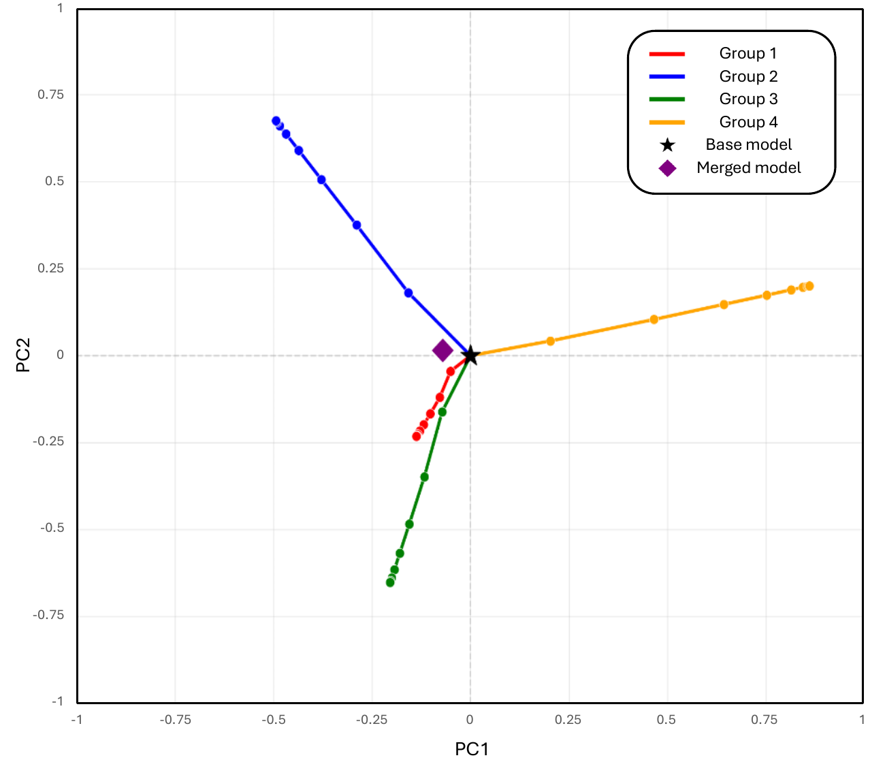
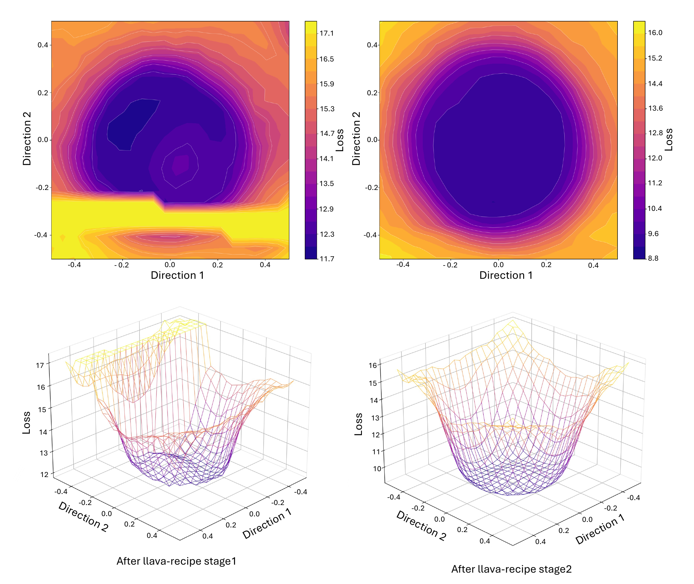
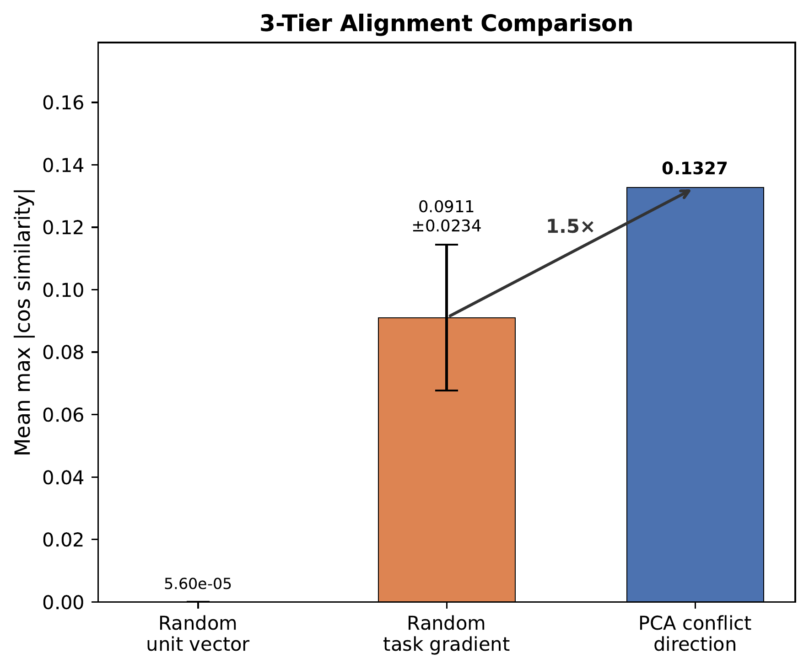
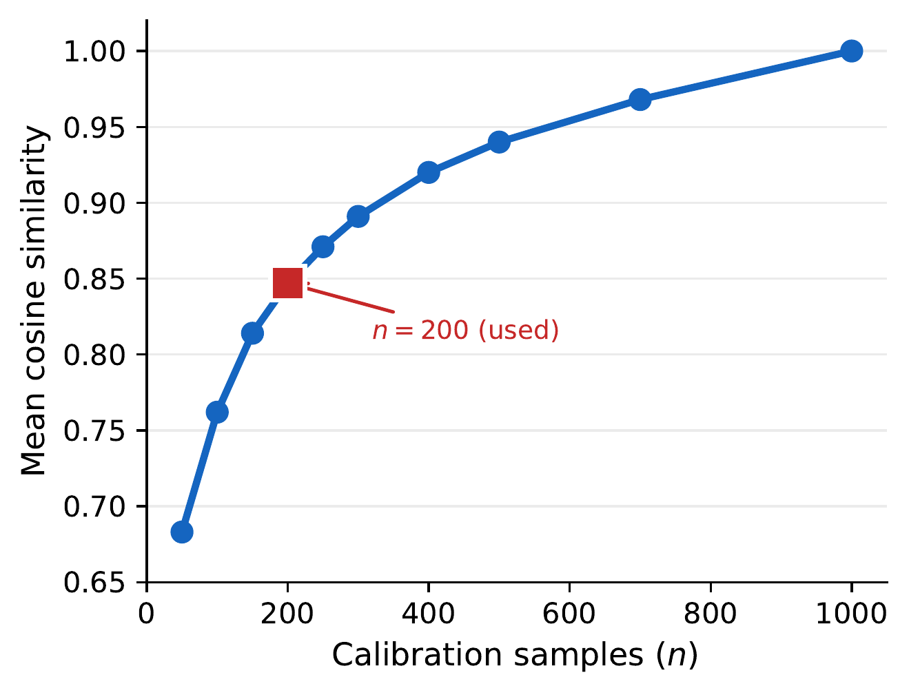
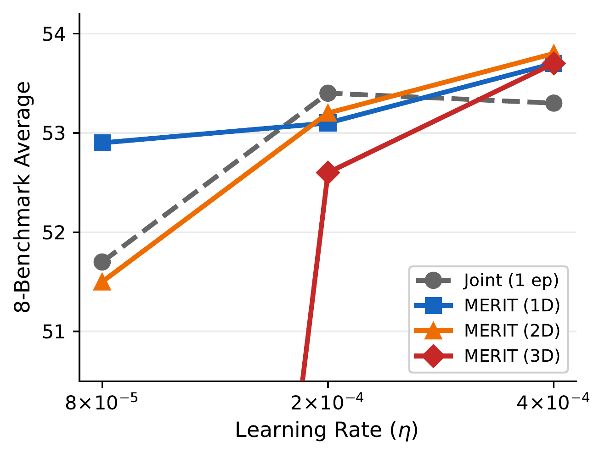

Dataset-level gradients form sharp directional clusters — heterogeneity is structured, not noise.


TL;DR. Split a heterogeneous mixture along top PCA axes of dataset-level gradient conflict, train each branch independently, merge once. Improves the 8-benchmark multimodal average from 54.3 → 57.0 (~5% relative) on Qwen2.5-VL-3B with 136 Vision-FLAN tasks, while eliminating step-level gradient synchronization.
Instruction tuning large multimodal models on heterogeneous mixtures is bottlenecked by gradient interference and bandwidth-heavy synchronization. We develop a local quadratic theory inside a shared flat basin showing that merging is never worse than the weighted average of individual losses, with improvement governed by curvature-weighted variance; that conflict-aware PCA splitting maximizes the merging gain along high-curvature directions; and that merging acts as curvature-weighted spectral filtering with implicit norm regularization. These implications motivate MERIT, a decentralized merge-ready instruction-tuning pipeline that estimates dataset-level gradient conflicts, extracts dominant conflict axes via PCA, partitions datasets accordingly, fine-tunes each partition independently with no inter-partition communication, and merges once via token-weighted averaging.
A five-step pipeline that happens once around a merge-ready initialization θ0.

Controlled 3B study on 136 Vision-FLAN tasks + 7B scaling on a 176-source 1.6 M mixture + text-only generalization on 66 FLAN tasks.
| Method | Seed | LLaVA-W | MMVet | TextVQA | AI2D | MathVista | MMMU | Avg. |
|---|---|---|---|---|---|---|---|---|
| Joint (1 ep) | 69.2 | 41.9 | 36.4 | 68.0 | 62.6 | 34.2 | 41.9 | 54.3 |
| Joint (2 ep) | 70.0 | 42.8 | 37.6 | 63.4 | 62.5 | 36.5 | 43.0 | 54.7 |
| Random-8 | 69.5 | 42.2 | 35.0 | 73.7 | 61.7 | 33.5 | 40.5 | 54.5 |
| MERIT-1D | 71.0 | 43.1 | 35.0 | 72.4 | 62.1 | 36.5 | 41.4 | 55.2 |
| MERIT-2D | 70.8 | 47.4 | 36.6 | 74.1 | 61.5 | 36.0 | 40.7 | 55.7 |
| MERIT-3D | 70.5 | 52.0 | 37.7 | 75.2 | 62.5 | 35.4 | 42.7 | 57.0 |
8-benchmark average on Qwen2.5-VL-3B, 5-seed primary comparison.
Three empirical checks that the theory’s assumptions hold in practice.



@inproceedings{merit,
title = {Decentralized Instruction Tuning: Conflict-Aware Splitting
and Weight Merging},
author = {Choi, Minsik and Kim, Geewook},
booktitle = {International Conference on Machine Learning (ICML)},
year = {2026},
note = {To appear}
}